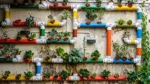

Benefícios da Agricultura Urbana
A agricultura urbana oferece uma série de benefícios para as cidades e seus habitantes. Entre os principais, destacam-se:
- Redução da pegada de carbono ao diminuir a necessidade de transporte de alimentos.
- Melhoria da qualidade do ar e do ambiente urbano.
- Promoção da coesão social e do engajamento comunitário.
- Incentivo à educação e conscientização sobre práticas sustentáveis.
- Espaço Limitado: O espaço é frequentemente escasso e deve ser maximizado de forma eficiente, o que pode limitar a escala e a variedade de cultivos.
- Qualidade do Solo: Em áreas urbanas, o solo pode ser contaminado ou de baixa qualidade, exigindo a utilização de métodos alternativos como cultivo em vasos ou sistemas hidropônicos.
- Acesso a Recursos: Pode ser difícil obter água de qualidade, nutrientes e outros recursos essenciais em áreas urbanas densamente povoadas.
- Custos: O custo de adaptação e manutenção de infraestruturas urbanas para agricultura pode ser elevado, incluindo sistemas de irrigação, iluminação e fertilizantes.
- Regulamentação e Políticas: Restrições e regulamentações locais podem limitar as práticas de cultivo urbano, afetando o crescimento e a viabilidade dos projetos.
- Manutenção e Gestão: Requer um gerenciamento contínuo para garantir a saúde das plantas e o controle de pragas e doenças em ambientes urbanos.
- mpactos Ambientais: Embora geralmente positivos, a agricultura urbana pode ter impactos como o aumento da poluição se não for bem planejada, especialmente em áreas de alto tráfego.
- Integração Comunitária: A aceitação e participação da comunidade podem variar, e a integração com o entorno urbano pode exigir esforços para educar e engajar residentes.
A agricultura urbana, embora promissora e crescente, enfrenta vários desafios:
Superar esses desafios exige inovação, planejamento cuidadoso e colaboração entre agricultores urbanos, governos locais e comunidades.

Métodos de Agricultura Urbana
Existem vários métodos que podem ser utilizados para cultivar alimentos nas cidades. Alguns dos mais comuns incluem:
- Jardins Comunitários: Os jardins comunitários são espaços de cultivo e convivência que pertencem a uma comunidade ou grupo específico e são mantidos por seus membros.
- Horta Vertical: A horta vertical é uma excelente solução para cultivar plantas em espaços reduzidos, como varandas, pequenos jardins ou até mesmo dentro de apartamentos.
- Agricultura em Telhados: Cultivo de alimentos em telhados de edifícios.O cultivo de alimentos em telhados, também conhecido como agricultura urbana em telhados, tem se tornado uma prática cada vez mais popular devido aos seus diversos benefícios.
- Hidroponia: Cultivo de plantas sem solo utilizando soluções nutritivas.
- Aquaponia: Sistema que combina cultivo de plantas com criação de peixes.

Eles oferecem uma variedade de benefícios, como:
1. Produção de Alimentos: Permitem que os participantes cultivem suas próprias frutas, vegetais e ervas, promovendo a segurança alimentar e a redução dos custos com alimentos.
2. Integração Social: Funcionam como pontos de encontro para os membros da comunidade, promovendo o diálogo, a cooperação e a construção de laços sociais.
3. Educação e Aprendizado:Servem como locais para aprender sobre jardinagem, práticas sustentáveis e agricultura urbana. Muitas vezes, oferecem workshops e atividades educacionais.
4. Benefícios Ambientais:Contribuem para a criação de espaços verdes nas áreas urbanas, ajudando a melhorar a qualidade do ar, o manejo de águas pluviais e a biodiversidade local.
5. Bem-Estar e Saúde:Estar em contato com a natureza e participar do cultivo de alimentos pode melhorar a saúde mental e física dos participantes.
Esses jardins podem variar em tamanho e forma, desde pequenos canteiros em terrenos urbanos até grandes áreas de cultivo em subúrbios. Além disso, muitas vezes são apoiados por ONGs, associações comunitárias ou parcerias com governos locais.
Se você estiver interessado em iniciar ou participar de um jardim comunitário, pode começar investigando as oportunidades em sua área local ou entrar em contato com organizações que promovem a agricultura urbana e o engajamento comunitário.

Aqui estão algumas dicas e informações sobre como montar e cuidar de uma horta vertical:
Benefícios da Horta Vertical
-Economia de Espaço: Ideal para ambientes pequenos, permite cultivar uma variedade de plantas sem ocupar muito espaço horizontal.
-Acesso Facilitado: Plantas são mais acessíveis, o que pode facilitar o manejo e a colheita.
-Melhora da Estética: Pode transformar um espaço vazio ou sem vida em um jardim vibrante e atraente.
-Microclima: Pode ajudar a criar um microclima mais fresco e agradável ao redor de sua casa.
Como Montar uma Horta Vertical
1. Escolha do Local:
- Exposição Solar: Certifique-se de que o local escolhido receba a quantidade adequada de luz solar para as plantas que você deseja cultivar.
- Proteção Contra Ventos:Se estiver em um local exposto a ventos fortes, considere usar barreiras ou suportes para proteger suas plantas.
2. Escolha das Estruturas:
- Painéis Verticais: Estruturas fixas como painéis de madeira ou metal que suportam vasos ou caixas.
- Trellis: Redes ou treliças que podem ser usadas para plantas trepadeiras.
- Prateleiras:Estantes ou prateleiras montadas na parede para vasos ou caixas de cultivo.
- Sistemas Hidropônicos: Estruturas que suportam sistemas de cultivo sem solo, usando soluções nutritivas.
3. Preparação do Solo e Plantio:
- Escolha do Substrato: Utilize um substrato leve e bem drenado. Para hortas verticais, misturas de terra com perlita ou vermiculita são recomendadas.
- Escolha das Plantas: Opte por plantas que se adaptam bem ao cultivo vertical, como ervas (manjericão, salsa, coentro), vegetais compactos (alface, espinafre) e plantas ornamentais.
4. Instalação e Manutenção:
- Fixação Segura: Certifique-se de que a estrutura esteja firmemente fixada e suporte o peso das plantas e do substrato.
- Regas: Monitore a umidade do substrato, já que em estruturas verticais a evaporação pode ser mais rápida. Um sistema de irrigação por gotejamento pode ser útil.
- Poda e Cuidados: Realize podas regulares para manter as plantas saudáveis e evitar que uma planta sombreie as outras.
5. Manutenção e Monitoramento:
- Fertilização: Forneça nutrientes conforme a necessidade das plantas. Fertilizantes líquidos são práticos para hortas verticais.
- Controle de Pragas e Doenças: Inspecione regularmente as plantas para identificar e tratar possíveis pragas e doenças.
Exemplos de Estruturas para Horta Vertical
- Vasos Suspensos: Vasos ou bolsos presos a uma estrutura ou parede.
- Paredes Verdes: Estruturas que suportam plantas em diferentes camadas, criando uma parede de vegetação.
- Jardins de Paletes: Paletes de madeira transformados em suportes para vasos e plantas.
Cuidados Especiais
- Ventilação Adequada: Certifique-se de que as plantas tenham espaço suficiente para respirar e evitar doenças fúngicas.
- Acesso ao Sol: Ajuste as plantas conforme a necessidade de luz solar e, se necessário, use iluminação suplementar para áreas internas.
Uma horta vertical pode ser uma maneira divertida e produtiva de cultivar suas próprias plantas, mesmo com espaço limitado. Com um pouco de planejamento e cuidado, você pode desfrutar dos benefícios de uma horta exuberante e acessível.

Aqui estão alguns aspectos importantes:
Benefícios:
- Aproveitamento de Espaço: Em áreas urbanas densamente povoadas, telhados oferecem uma forma de utilizar o espaço que, de outra forma, ficaria ocioso.
- Redução da Pegada de Carbono: Cultivar alimentos localmente reduz a necessidade de transporte de alimentos, o que pode diminuir as emissões de carbono associadas ao transporte de longa distância.
- Melhoria na Qualidade do Ar: Plantas ajudam a filtrar poluentes e a aumentar a umidade do ar, contribuindo para um ambiente urbano mais saudável.
- Isolamento Térmico: Os telhados verdes (com vegetação) podem melhorar o isolamento térmico dos edifícios, reduzindo a necessidade de aquecimento e resfriamento, o que pode levar a economias de energia.
- Aumento da Biodiversidade: Telhados verdes oferecem habitat para insetos e aves, aumentando a biodiversidade urbana.
- Benefícios Psicológicos e Sociais: A jardinagem pode ser terapêutica e proporcionar um senso de comunidade, especialmente em projetos comunitários de cultivo urbano.
Desafios:
- Peso e Estrutura: A estrutura do edifício deve ser capaz de suportar o peso adicional do solo e das plantas. Muitas vezes, é necessário reforçar a estrutura ou utilizar sistemas de cultivo mais leves, como jardins hidropônicos.
- Manutenção e Irrigação: Os telhados podem exigir sistemas de irrigação especializados e manutenção regular para garantir que as plantas recebam água suficiente e estejam livres de pragas.
- Exposição ao Clima: As condições climáticas em telhados podem ser extremas, com exposição direta ao sol e ao vento. Isso pode exigir o uso de técnicas de cultivo adaptadas, como sombreamento e sistemas de irrigação eficientes.
- Acesso e Logística: Pode haver desafios logísticos em termos de acesso ao telhado e transporte dos insumos e colheitas.
Práticas Comuns:
1. Sistemas de Cultivo:
- Cultivo em Solo: Solo ou substrato em recipientes. Pode precisar de drenagem adicional.
- Hidroponia: Cultivo de plantas em solução nutritiva sem solo, ideal para telhados devido ao seu peso reduzido.
- Aeroponia: Cultivo de plantas em um ambiente de névoa nutritiva, também leve e eficiente.
2. Escolha de Plantas:
- Optar por plantas que sejam adequadas ao clima local e que tenham um crescimento rápido e resistente, como ervas, vegetais de folhas verdes e alguns frutos pequenos.3. Design e Infraestrutura:
- Utilização de sistemas de drenagem eficientes, impermeabilização adequada e planejamento do layout para maximizar o espaço e facilitar o acesso.
Exemplos e Casos de Sucesso:
- Cidades como Nova York e Tóquio têm vários projetos de telhados verdes que não só produzem alimentos, mas também contribuem para a sustentabilidade urbana e a estética da cidade.
- Empresas e cooperativas em várias cidades ao redor do mundo estão investindo em tecnologias inovadoras para a agricultura em telhados, contribuindo para o crescimento dessa prática.
- Se você está considerando iniciar um projeto de cultivo em telhado, vale a pena fazer uma pesquisa detalhada e, se possível, consultar profissionais especializados em jardinagem urbana e engenharia de estruturas.
A hidroponia é uma técnica de cultivo onde as plantas são cultivadas sem solo, utilizando soluções nutritivas diretamente na água. Em vez de depender dos nutrientes presentes no solo, as raízes das plantas ficam imersas em uma solução que contém todos os nutrientes essenciais para seu crescimento.
Existem vários métodos de hidroponia, como o sistema de cultivo em fluxo e refluxo, o sistema de película de nutrientes (NFT), o sistema de cultivo em água (DWC), e o sistema de substrato, onde a planta cresce em um meio inerte como perlita ou vermiculita. Cada método tem suas próprias vantagens e desafios.
A hidroponia pode oferecer um controle mais preciso sobre os nutrientes e o ambiente de crescimento, potencialmente resultando em maior produtividade e menor uso de água e pesticidas em comparação com a agricultura tradicional. Além disso, permite o cultivo em áreas com solo de baixa qualidade ou até mesmo em ambientes urbanos.

Os principais benefícios incluem:
1. Crescimento Acelerado: Nutrientes são fornecidos diretamente às raízes, promovendo um crescimento mais rápido.
2. Uso Eficiente da Água: Menos água é usada em comparação com a agricultura convencional.
3. Menos Espaço Necessário: Pode ser cultivado em espaços reduzidos, como áreas urbanas ou estufas.
4. Controle de Nutrientes e Ambiente: Permite um controle preciso dos nutrientes e condições ambientais, resultando em uma produção mais consistente.
5. Menos Problemas com Pragas e Doenças: Reduz a exposição a muitas pragas e doenças do solo.
Os desafios da hidroponia incluem:
-Além disso, a hidroponia pode levar a uma colheita mais limpa e sustentável, com menos necessidade de pesticidas e fertilizantes químicos.
A aquaponia é um sistema integrado que combina o cultivo de plantas com a criação de peixes. Neste sistema, os resíduos dos peixes fornecem nutrientes essenciais para as plantas, enquanto as plantas ajudam a filtrar e purificar a água para os peixes. Isso cria um ciclo sustentável e eficiente, reduzindo a necessidade de fertilizantes químicos e a quantidade de água utilizada. É um método que promove a produção de alimentos de forma ecológica e pode ser utilizado em diversas escalas, desde pequenos sistemas domésticos até grandes instalações comerciais.

Os benefícios da aquaponia incluem:
1. Eficiência na Utilização de Água: O sistema recicla água, reduzindo significativamente o consumo em comparação com métodos tradicionais de cultivo e criação de peixes.
2. Uso Reduzido de Fertilizantes: Os nutrientes dos resíduos dos peixes alimentam as plantas, diminuindo a necessidade de fertilizantes químicos.
3.Crescimento Sustentável: Promove um ciclo ecológico onde as plantas e peixes se beneficiam mutuamente, reduzindo resíduos e aumentando a sustentabilidade.
4. Menos Poluição: A água é filtrada naturalmente pelas plantas, diminuindo a poluição do ambiente aquático.
5. Versatilidade: Pode ser adaptado a diferentes escalas e ambientes, desde pequenos sistemas caseiros até grandes instalações comerciais.
Esses fatores tornam a aquaponia uma prática ambientalmente amigável e economicamente eficiente.
Os principais desafios da aquaponia incluem:
1. Complexidade do Sistema: Requer um equilíbrio cuidadoso entre as necessidades dos peixes e das plantas, o que pode ser tecnicamente complexo.
2. Custo Inicial: A instalação e configuração do sistema podem ser caras, especialmente para sistemas maiores e mais avançados.
3. Manutenção e Monitoramento: Exige monitoramento constante da qualidade da água, saúde dos peixes e crescimento das plantas para evitar desequilíbrios.
4. Conhecimento Técnico: Necessita de conhecimento especializado tanto em cultivo de plantas quanto em aquicultura, o que pode ser um obstáculo para iniciantes.
5. Problemas com Doenças e Pragas: A presença de ambos os organismos pode complicar o manejo de doenças e pragas.
Contato
Quem Somos

Jeslaine Caroline de Souza
Estudante do curso de Desenvolvimento de Sistema
Atualmente estou vinculada ao curso de Desenvolvimento de Sistema no segundo ano.